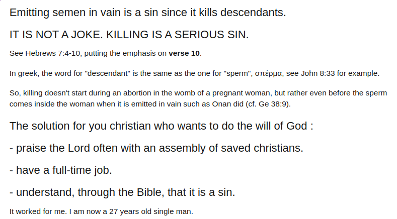

Bienvenue sur le site internet de l'église (ou: assemblée) Liberté !
Cette assemblée se base sur l'Ecriture sainte.
Ainsi, cette assemblée diffère d'une multitude d'autres par le fait que :
- nous lisons l'Ecriture Sainte en grec/hébreu biblique, nous ne croyons pas que la KJV soit la parole parfaite du Seigneur (cf. les sermons associés: ici),
- ardemment ("hard preaching"), nous croyons et prêchons la doctrine "une fois sauvé, toujours sauvé" (cf. les sermons associés: ici),
- contrairement à la plupart (n'est-ce pas?) des églises dites chrétiennes,
nous revenons à la Torah entière, nous ne croyons pas au talmud, nous prêchons contre le péché (cf. les sermons associés: ici),
- nous n'interdisons pas la "fornication" tant que celle-ci ne vire
pas à la prostitution (πορνεία) (comme ce fut probablement le cas chez les Corinthiens) (cf. les sermons associés: ici),
- nous ne voulons pas retenir la vérité captive, d'où les cultes pluri-hebdomadaires et les évangélisations (nous pratiquons notamment la Roman road, ex: ici) (cf. les sermons associés: ici).
